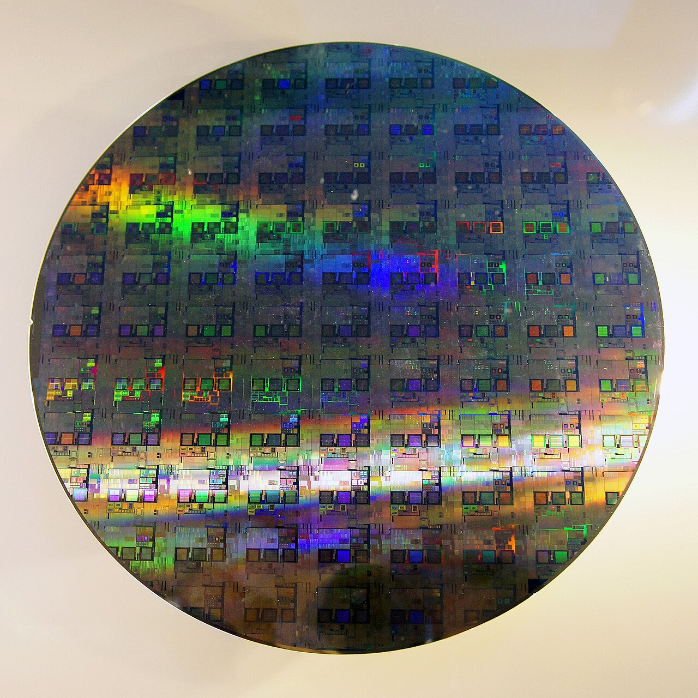
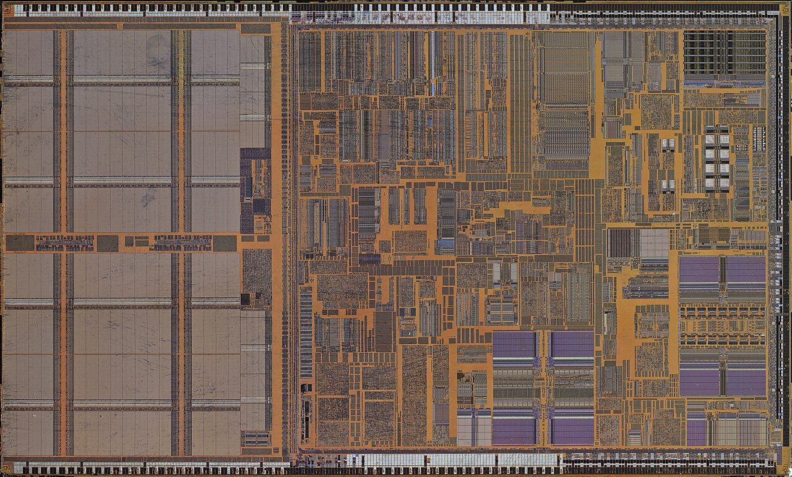
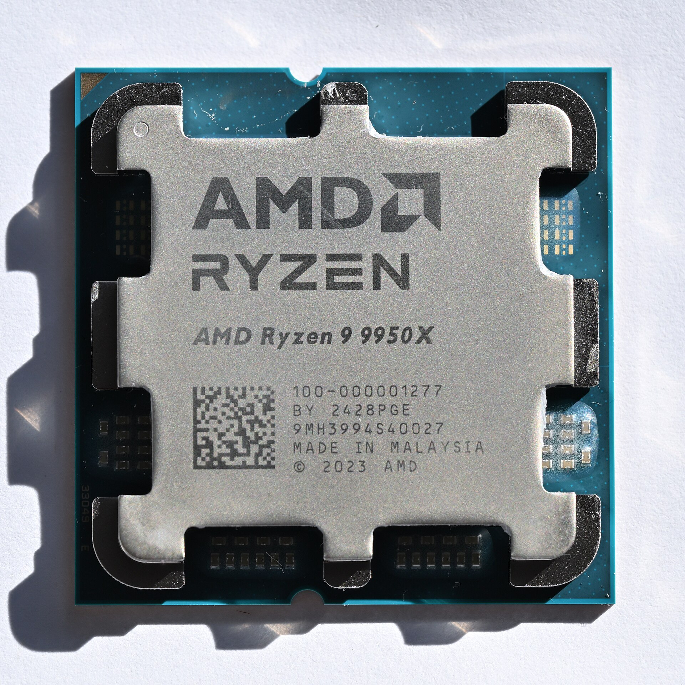
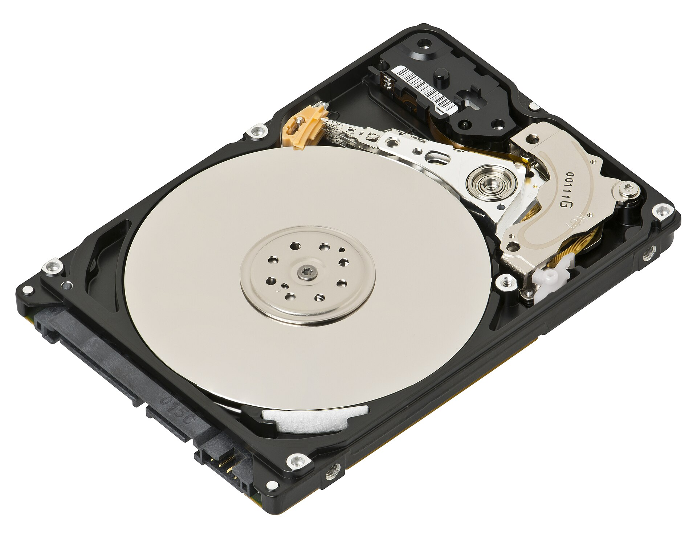
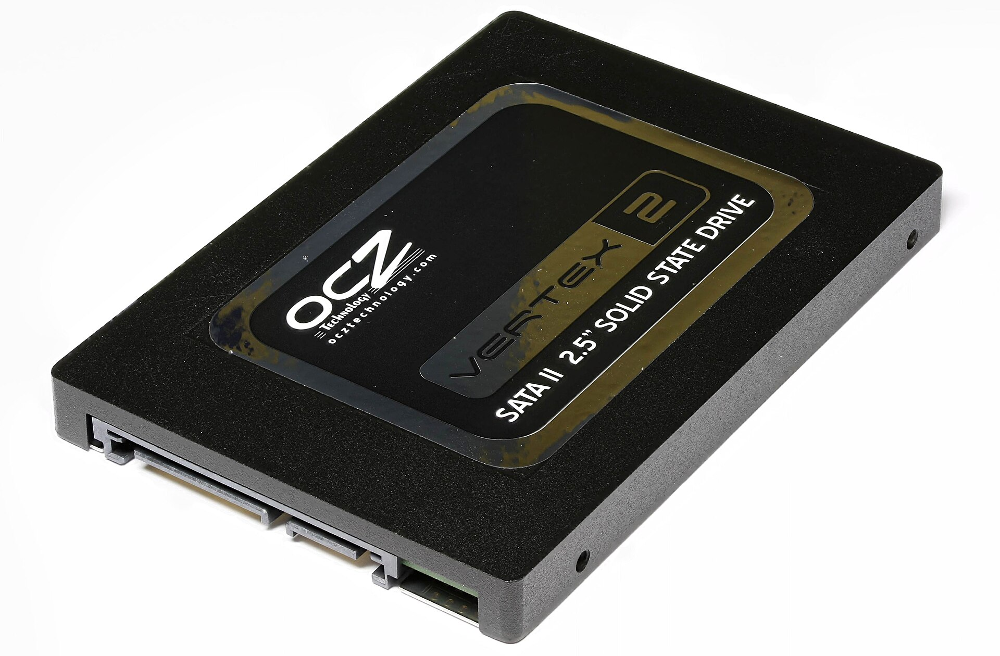
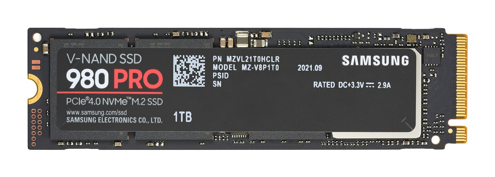
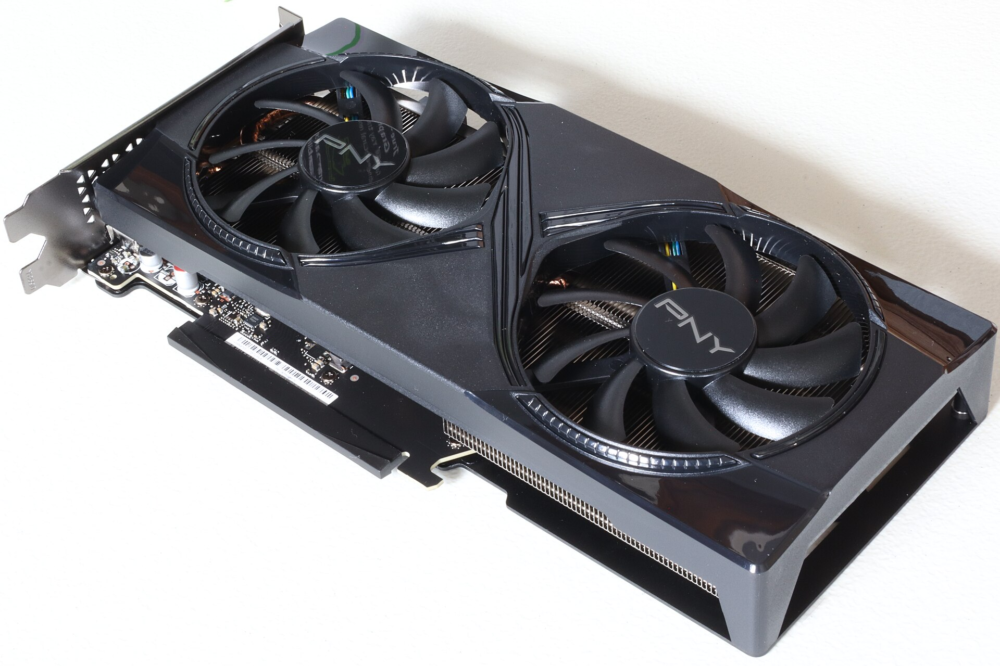
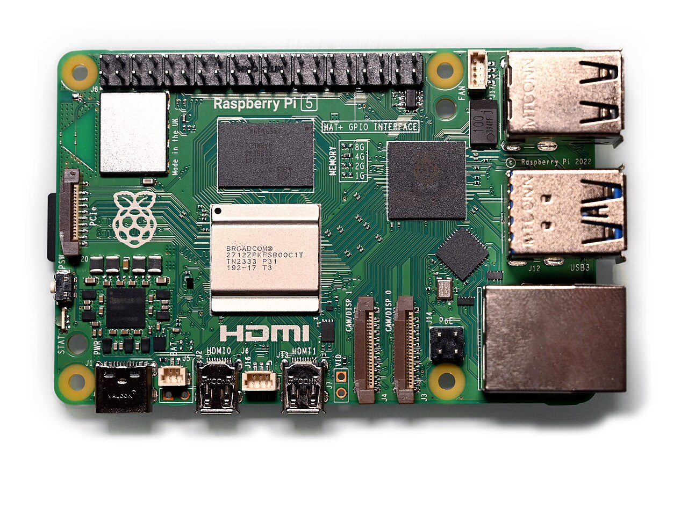

Hardware y Software pensando como programador
Antes de escribir la primera línea de código, abrimos la computadora y entendemos qué hace con cada instrucción que le damos.
Prof. Jarlin Figueroa M.A.
¿Por qué empezar por el hardware y el software?
Toca cada situaciónProgramar es darle órdenes a una máquina. Si conoces la máquina, sabes qué le puedes pedir, cuánto le cuesta y qué hacer cuando algo falla. Un piloto no solo mueve el timón: entiende el motor.
Los errores te hablan del hardware
Elige un error real y descubre qué pieza está detrás¿Qué pieza falló?
Toca un error para ver qué parte de la computadora o del sistema lo provocó.
Moraleja: quien entiende la máquina lee un error y sabe dónde buscar. Quien no, solo copia y pega.
Toda computadora funciona igual
Modelo de von Neumann · sigue el viaje de un cálculoTu celular, tu laptop y un servidor de Google tienen estas mismas cinco partes. Cuando programas, siempre mueves datos entre ellas.
Hardware: las piezas que ejecutan tu código
Silicio, bits, procesador, memoria, discos y tarjeta de video. Por cada pieza, una pregunta: ¿qué cambia para mí cuando programo?
Del silicio al bit
Enciende y apaga los transistores
oblea de silicio · 30 cmEn esta oblea se graban decenas de chips. Cada chip tiene miles de millones de transistores: interruptores diminutos que solo saben estar apagados (0) o encendidos (1).
8 bits forman 1 byte. Todo lo que programes (textos, números, fotos, videos) termina convertido en unos y ceros.
La CPU por dentro
Foto real del chip de un Pentium II · toca los puntos
Un chip visto al microscopio
Este procesador de 1999 tiene 27 millones de transistores. Uno actual supera los 20 000 millones. Toca los números para recorrerlo.
Para programar: la CPU solo entiende instrucciones muy simples (sumar, comparar, mover datos). Tu código en Python se traduce a miles de ellas.
Así ejecuta la CPU tu código
Buscar, decodificar, ejecutar, guardarSe traduce a instrucciones de máquina (simplificadas):
Una CPU de 4 GHz repite este ciclo unas 4 000 millones de veces por segundo, en cada núcleo.
Núcleos: trabajar en paralelo
Reparte 16 tareas entre los núcleos
AMD Ryzen 9 9950X · 16 núcleosUn procesador completo dentro del chip.
Una tarea que un núcleo atiende.
Miles de millones de ciclos por segundo.
Dato clave: un programa sencillo en Python usa un solo núcleo. Para aprovechar los demás hay que programarlo (hilos, procesos). Tener 16 núcleos no acelera un código mal escrito.
¿Qué tan lejos está tu dato?
Jerarquía de memoria · toca cada nivelArriba: más rápido y más pequeño · Abajo: más lento y más grande
Para programar: leer un archivo dentro de un ciclo es como viajar 4 días en cada vuelta. Cárgalo una vez a la RAM y trabaja desde ahí.
RAM: donde viven tus variables
Ejecuta el programa línea por línea módulo de RAM DDR4
módulo de RAM DDR4Almacenamiento: donde vive tu código
Lo que guardas se queda aunque apagues
HDD · platos que giran
SSD SATA
SSD NVMe M.2Tus archivos .py, .html y .js, las librerías que instalas y el propio Python viven aquí. Al ejecutar, el sistema los copia a la RAM.
Un proyecto real puede tener miles de archivos pequeños: ahí es donde un SSD se nota más.
Para programar: la RAM se borra al apagar; el disco no. Por eso tu programa debe guardar en archivos o bases de datos lo que no quieras perder.
GPU: miles de núcleos a la vez
Pinta la imagen con la CPU y con la GPU
GPU · RTX 5060 Ti · 4 608 núcleosPara programar: la IA hace millones de multiplicaciones iguales. La GPU las hace en paralelo; por eso se programa con herramientas como CUDA y por eso la IA pide «memoria de video» (VRAM).
128 píxeles. Una pantalla Full HD tiene más de 2 millones, y se redibuja 60 veces por segundo.
La placa madre y el arranque
¿Qué pasa al presionar el botón de encendido? placa madre
placa madreConecta CPU, RAM, discos y GPU por caminos de cobre llamados buses. Trae grabado un pequeño programa, la UEFI/BIOS: el primer software que se ejecuta.
Por eso, si el disco o el sistema operativo fallan, ningún programa tuyo puede ejecutarse.
Una computadora completa en tu mano
Raspberry Pi 5 · toca cada pieza
Todo lo que vimos, en 8,5 cm
Procesador, memoria, almacenamiento, entradas y salidas. Cuesta menos que un celular y corre Linux.
Para programar: con Python y sus pines GPIO controlas luces, sensores y motores. Así nacen robots, estaciones de clima y proyectos de feria científica.
Software: las instrucciones que mueven todo
Tipos de software, sistema operativo, kernel y, sobre todo, cómo un lenguaje de programación conversa con el sistema operativo para que tu código haga algo.
Tres tipos de software
Reto: clasifica cada programa🪟 De sistema
Controla la máquina: sistemas operativos y drivers.
🧩 De aplicación
Lo que usa la gente: navegador, Word, WhatsApp, juegos.
🛠️ De programación
Lo que usamos para crear software: editores, lenguajes, Git.
El sistema operativo: el administrador
Tu programa es un proceso más · prueba un bucle infinitoReparte la CPU entre los programas.
Da a cada programa su parte de la RAM.
Organiza carpetas y permisos del disco.
Habla con el hardware por medio de drivers.
Un programa en ejecución se llama proceso y el sistema le da un número: el PID.
El kernel y las llamadas al sistema
Tu programa nunca toca el hardware: se lo pide al kernelMODO USUARIO · aquí vive tu código
MODO KERNEL · núcleo del sistema operativo
HARDWARE
¿Por qué así? Si cada programa tocara el disco directamente, uno con errores podría borrar todo. El kernel protege y comparte el hardware.
Cómo funciona un lenguaje con el sistema operativo
Elige un lenguaje y sigue a tu código hasta la pantalla1 · TU CÓDIGOtexto en un archivo
2 · EL LENGUAJEtraductor: compilador o intérprete
3 · SISTEMA OPERATIVOkernel y drivers
4 · HARDWARECPU, RAM, pantalla
print("Hola") desde tu archivo hasta la pantalla.Compilado, interpretado y JIT
Tres formas de traducir tu códigoToca cada tarjeta para ver la comparación.
Tiempos aproximados en una laptop común; varían según el equipo.
Entonces, ¿Python es malo? No: es más fácil de escribir y sus librerías de IA están hechas en C por dentro. Cada lenguaje tiene su lugar.
Sistema de archivos: rutas y carpetas
Elige la carpeta actual y un archivoToca una carpeta para «pararte» en ella; toca un archivo para ver su ruta.
La terminal: hablarle directo al sistema
Escribe comandos o toca los sugeridosWindows usa dir y cls; Linux y macOS usan ls y clear. Aquí funcionan ambos.
¿Tu computadora está lista para programar?
Elige lo que tienesProcesador
Memoria RAM
Almacenamiento
Elige tus piezas
Visual Studio CodeEditor de código · usa RAM y CPU
PythonIntérprete del lenguaje · usa CPU
Navegador (Chrome o Edge)Prueba tus páginas web · mucha RAM
GitGuarda versiones de tu proyecto · usa el disco
Asistente de IAEn la nube: necesita buena conexión a internet
Recomendado: 6 núcleos o más, 16 GB de RAM y SSD. Con 8 GB y SSD también se puede empezar.
Reto final: piensa como programador
10 preguntasAhora ya sabes por qué
Lo que te llevas del Módulo 1«El software es la parte de la computadora que no se puede patear.»
— Frase popular entre informáticos
Próximo módulo: Principios de Redes, o cómo viajan tus datos de una computadora a otra.
Realizado por Jarlin Figueroa M.A.